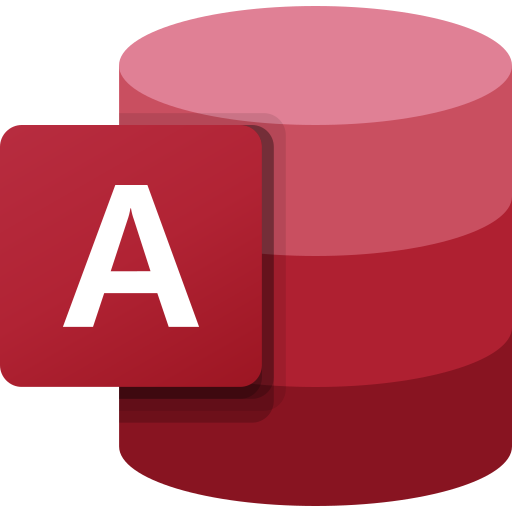
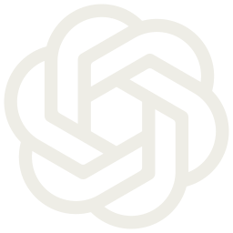
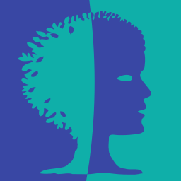
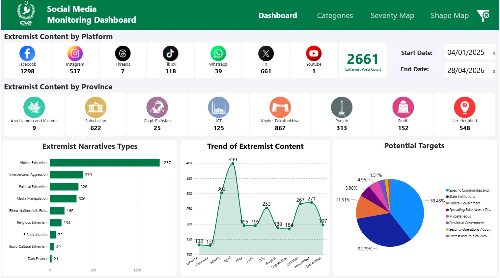

Data visualization
Dashboards built to be read in a meeting, not decoded.
Power BI Tableau
Tableau Looker StudioQlik SenseExcel
Looker StudioQlik SenseExcel
Beyond the spreadsheet.
Turning raw data into insights, automating the boring, and building systems that scale.
I'm a Data Analyst and Automation Specialist. I turn messy, scattered data into dashboards people trust, and repetitive reporting into systems that run themselves.
My work covers the full path from raw source to decision: Python scrapers and ETL pipelines that collect and clean the data, SQL and MySQL to model it, and Power BI dashboards that decision-makers can read at a glance.
Increasingly, that work includes AI. I use LLMs for sentiment analysis at scale, Whisper to turn audio into searchable text, and MCP servers that connect language models to live sources such as the YouTube API.
I work best with teams that have more data than time. The goal is always the same: fewer manual steps, faster answers, and systems that keep running long after handover.
Dashboards built to be read in a meeting, not decoded.
Forms, sheets, PDFs and WhatsApp, wired so Monday runs itself.
Site-aware crawlers that survive pagination, logins and layout changes.
Well-structured, clean tables that every report and dashboard can rely on.

MS AccessPython for pipelines and scrapers, SQL for everything in between.
Sentiment tagging, speech-to-text, and MCP servers that connect LLMs to live data.

OpenAI WhisperMCP ServersSurvey analysis and brand monitoring, from SPSS to Brand24.

SynthesioBrand24Power BI dashboards, Python reporting automation, DeepSeek media monitoring, 29+ scrapers and alert pipelines.
Built Power BI sales and performance dashboards and ran A/B testing to drive data-informed decisions.
Built monthly and annual e-commerce sales reports and interactive Excel and Power BI dashboards, and ran pricing analysis across the online store.
Keyword research and competitor analysis: an early start in data-driven decision making.
Eight Power BI builds, from HR attrition to an esports career. Four are public; four are confidential workplace builds.

The operational lens on the CVE media dataset. It tracks flagged content by platform, category and district, then uses a geo severity map and region shape-map to show exactly where risk is concentrating, so teams know where to act.
Personal projects I built end to end, for jobs a spreadsheet can't do on its own. Open the live link and sign in with Google.
Reads competitors' public Shopify product feeds: 4,711 products from 3 stores in one check.
Re-checks every store on a 6-hour schedule on its own, through a GitHub Actions job.
Matches rival products to yours and estimates the revenue at risk when you are undercut.
Suggests a move for each matched product, such as hold, match, beat or raise the price, plus an AI pricing brief.
Eight pipelines and tools that replaced someone's Monday.
A scheduled pipeline scrapes the day's coverage, runs each item through the DeepSeek API for sentiment, then assembles a polished Word report: headlines, sentiment breakdown and source mix, ready in the editor's inbox every morning.
A Google Form triggers an Apps Script that builds a PDF, emails stakeholders, and drops the file in Drive. A Python watcher picks it up and posts it to the WhatsApp response group within minutes. On-call alerts, hands-free.
A Tkinter form takes the keywords; Selenium pastes them into Brand24's search, applies region, language and date filters, downloads the PDF, renames it by keyword, ships it to the right WhatsApp group, and deletes the file to avoid duplicates.
Reads target handles from the social-media team's sheet, opens each profile in a headless browser, scrolls through posts, and writes a clean CSV: captions, dates, engagement, links.
A site-aware Python crawler walks each paper's archive, handles pagination and date filters, and collects article text and metadata into a tidy dataset. Each item is then passed to the DeepSeek API for sentiment analysis, and the results are compiled into a ready-to-share PDF report. End to end, automatically.
Each website got its own scraper. Every site has a different layout and language, so one-size-fits-all wouldn't work. Each scraper pulls the data and outputs clean JSON and CSV files in the source language.
A multi-language transcription system built on OpenAI Whisper that converts audio and video coverage into accurate, searchable text. It lets broadcast clips be monitored and analyzed the same way as print, so spoken coverage sits alongside everything else.
An AI-driven system that connects a language model to the YouTube API through the Model Context Protocol. The model pulls a video's engagement and comments on demand and reads audience sentiment on the spot, with no one exporting data by hand.
If you've got data sitting somewhere awkward, or a process someone does every Monday, let's build something that runs on its own.
m_h2713@yahoo.com